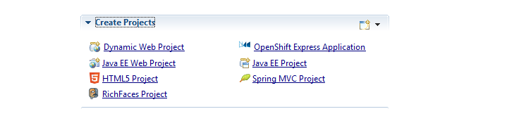

|
New project wizards
|
The Create Project section of JBoss Central has been revamped to offer you links to new project wizards :

- Dynamic Web Project : the standard Eclipse Java EE Web project wizard
- OpenShift Express Application : allows you to create a new OpenShift Express-based project
- Java EE Web Project : generates a Java EE 6 web project with JSF 2, JPA 2, REST and CDI support enabled
- Java EE Project : generates a Java EE 6 multi module application, complete with EAR, EJB and WAR projects, having JSF 2, JPA 2, REST and CDI support enabled
- HTML5 Project : generates a Java EE 6 HTML5 web application compatible with mobile devices, having JPA 2, REST and CDI support enabled
- Spring MVC Project : generates a Spring MVC web application with Java EE persistence settings (server bootstrapped JPA, JTA transaction management) for JBoss AS7 / EAP 6
- RichFaces Project : generates a Java EE 6 web application using RichFaces
Except for the stock Eclipse Dynamic Web project, all wizards will generate Maven based projects.
Related Jira
|